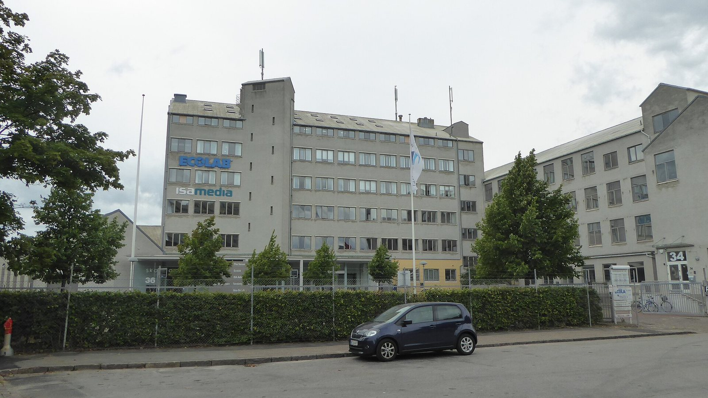

Analyse

Ecolab wächst zweistellig, doch der Gewinn je Aktie sinkt: Warum das gute Geschäft für Dividendenjäger schwierig ist
$ECL
Ecolab reinigt Wasser, sichert Hygiene in Hotels und Krankenhäusern und bekämpft Schädlinge. Im dritten Quartal 2026 stieg der Umsatz um 13 %, der berichtete Gewinn je Aktie fiel um 5 %. Was das Unternehmen besonders macht und warum die Aktie für Dividendenanleger teuer ist.

Kurz gesagt
Umsatz: 4,7 Mrd. US-Dollar (+13 %)
Gewinn je Aktie: bereinigt 2,18 US-Dollar (+5 %), berichtet 1,95 US-Dollar (−5 %)
Dividende: 0,73 US-Dollar je Quartal, Rendite rund 1 %
Ein Unternehmen, das fast überall unauffällig im Hintergrund arbeitet. Das Geschäft läuft, die Aktie ist dafür teuer und die Dividende klein.
Was halte ich von Ecolab? Ein interessanter Chemiewert: Das Unternehmen reinigt Wasser, sorgt für Hygiene in Hotels, Restaurants, Krankenhäusern und Fabriken und bekämpft nebenbei Schädlinge, und das als Marktführer. Auf den ersten Blick passt das nicht in den Fokus eines Dividendenrechners, denn die Dividendenrendite liegt bei nur rund 1 %. Dazu kommen ein Kurs-Gewinn-Verhältnis von etwa 35, Schulden von gut 13 Milliarden Dollar nach den Zukäufen und ein berichteter Gewinn je Aktie, der im dritten Quartal um 5 % sank, obwohl der Umsatz um 13 % wuchs. Das Gute ist hier also längst im Kurs: ein starkes Geschäft zu einem hohen Preis, für Dividendenjäger ohne Schnäppchenchance.
Was Ecolab eigentlich macht
Ecolab sitzt im US-Bundesstaat Minnesota und verkauft Lösungen für Betriebe: Chemie, Dosiertechnik und Beratung aus einer Hand. Wer in einem Restaurant die Spülmaschine laufen lässt, ein Hotelzimmer reinigt, in einer Brauerei Anlagen desinfiziert oder in einem Kraftwerk Kühlwasser aufbereitet, nutzt häufig Chemie, Dosiertechnik und Beratung von Ecolab. Dazu kommen Mitarbeiter, die vor Ort die Anlagen betreuen.
Das Geschäft hat vier Teile. Die Wassersparte ist mit gut der Hälfte des Umsatzes der größte, sie versorgt Industrie, Lebensmittelhersteller und zunehmend die Technologiebranche. Die Sparte für Hotels, Gastronomie und Reinigung steuert gut ein Drittel bei und verdient mit rund einem Viertel Marge am besten. Die Schädlingsbekämpfung ist mit etwa 8 % Umsatzanteil klein, wächst aber kräftig. Und die Sparte für Pharma und Biotechnik liefert Reinigungs- und Aufbereitungstechnik für Medikamentenhersteller.
| Sparte (3. Quartal 2026) | Umsatz | Organisches Wachstum | Marge |
|---|---|---|---|
| Wasser | 2,5 Mrd. $ | +9 % | 18,0 % |
| Hotels, Gastronomie, Reinigung | 1,6 Mrd. $ | +3 % | 24,7 % |
| Schädlingsbekämpfung | 0,4 Mrd. $ | +8 % | 20,3 % |
| Pharma und Biotechnik | 0,2 Mrd. $ | +17 % | 23,3 % |
Was das Besondere ist
Ecolab macht sich unentbehrlich. Der Anteil an den Ausgaben der Kunden ist klein, die Folgen eines Ausfalls sind groß: Wer verdorbene Lebensmittel, ein keimbelastetes Krankenhaus oder eine ausgefallene Kühlung riskiert, bleibt auch bei einem Preisaufschlag von ein paar Prozent beim bisherigen Anbieter. Deshalb setzt das Unternehmen Preise durch. Im dritten Quartal brachten sie 5 Prozentpunkte des Wachstums, die Menge nur 2.
Hinzu kommen Daten: Die digitale Sparte, die Anlagen überwacht und Verbrauch steuert, wuchs um 34 % auf 129 Millionen Dollar. Und es gibt ein neues Thema, das die Anleger begeistert: Rechenzentren. Mit der Übernahme von CoolIT, einem Spezialisten für Flüssigkühlung, und Ovivo Electronics, das Reinstwasser für die Chipfertigung liefert, ist Ecolab in den KI-Bau eingestiegen. Das Geschäft mit Hightech-Kunden wuchs organisch um 63 %. Der Konzernchef Christophe Beck bremst selbst: Dieser Wert sei ein Ausschlag nach oben, die Quartale würden schwanken.
Das dritte Quartal
Der Konzern sprach von einem Wendepunkt. Der Umsatz stieg um 13 % auf 4,7 Milliarden Dollar, davon 7 % aus eigener Kraft, der Rest aus Zukäufen und Währung. Das bereinigte operative Ergebnis wuchs um 14 % auf 893 Millionen Dollar, die Marge stieg organisch um 0,7 Punkte auf 19,6 %. Die Prognose für 2026 liegt bei 8,10 bis 8,20 Dollar je Aktie, für 2027 stellt das Management einen Gewinnzuwachs im mittleren zweistelligen Prozentbereich und eine Marge von 20 % in Aussicht.
Die Analysten fragten vor allem nach drei Dingen: warum die Marge im Wassergeschäft trotz kräftiger Mengen hinter den Erwartungen blieb, ob das Mengenwachstum auf Hightech und Pharma beschränkt ist, während das Geschäft mit Hotels und Restaurants leicht schrumpft, und ob die Kunden die Preiserhöhungen von 5 bis 6 % weiter hinnehmen. Beck sieht die Preise auch im ersten Halbjahr 2027 in dieser Höhe. In Nordamerika sank die Zahl der Restaurantbesuche im mittleren einstelligen Prozentbereich, im Nahen Osten fehlte rund ein Prozentpunkt Wachstum.
Warum das Gute so schlecht wirkt
Der Umsatz wächst um 13 %, der berichtete Gewinn je Aktie fällt um 5 % auf 1,95 Dollar. Die Lücke erklären die Zukäufe. Ecolab hat sie mit Schulden bezahlt: Die Zinsen stiegen im Quartal um 126 % auf 125 Millionen Dollar, die Verbindlichkeiten liegen bei gut 13 Milliarden Dollar, die Barmittel bei 0,7 Milliarden. Dazu kommen Abschreibungen auf die gekauften Firmen und Sonderkosten für den Umbau, für das Jahr rund 0,83 Dollar je Aktie. Rechnet man das heraus, steigt das Ergebnis um 5 % auf 2,18 Dollar. Allein CoolIT drückt das Ergebnis dieses Quartals um etwa 10 %, im vierten Quartal um 12 %.
Für Dividendenanleger kommt die Bewertung hinzu. Die Aktie stand vor den Zahlen bei rund 289 Dollar, danach erreichte sie ein neues Jahreshoch. Auf Basis des Gewinns für 2026 ergibt das ein Kurs-Gewinn-Verhältnis von rund 35, und das für ein Unternehmen, das in der Prognose mit Zuwächsen von 8 bis 9 % rechnet. Die Quartalsdividende von 0,73 Dollar, im Dezember um 12 % erhöht, ergibt 2,92 Dollar im Jahr und eine Rendite von rund 1 %. Das Unternehmen hebt sie seit 34 Jahren jedes Jahr an. Die Ausschüttungsquote liegt bei etwa 36 % des Gewinns, es bleibt also reichlich Luft.
Was Dividendenanleger daraus machen
Ecolab ist ein Qualitätswert mit stabilen Kunden, Preismacht und einer glaubwürdigen Wachstumsgeschichte. Wer vor allem laufende Ausschüttungen sucht, findet bei anderen Aktien mehr. Wer in 10 bis 20 Jahren denkt, bekommt eine Dividende, die regelmäßig und deutlich steigt, und einen Konzern, der von Hygiene, Wasserknappheit und dem Ausbau von Rechenzentren profitieren kann.
Die Risiken stehen im Bericht: Die Schulden sinken nur, wenn die Zukäufe halten, was Beck verspricht. Das Wachstum hängt an wenigen Treibern, nämlich Preisen, Rechenzentren und Biotechnik. Und bei einem Kurs-Gewinn-Verhältnis von 35 ist wenig Platz für Enttäuschungen. Ein Einstieg in Etappen, etwa über einen Sparplan, nimmt dem Kurs etwas von seiner Schärfe.
Quellen
- Ecolab Inc., Ergebnis des dritten Quartals 2026, Form 8-K (Anlage 99.1), 27.10.2026
- Ecolab Inc., Form 10-Q für das Quartal zum 30.9.2026
- Quartr, Ecolab (ECL) Q3 2026 Earnings Summary
- Indian Chemical News, „Ecolab’s Q3 growth accelerates to 13% as operating income jumps 14%“
- Webull, Ecolab Q3 2026 Earnings Call Transcript (maschinell erstellt)
- Simply Wall St, Dividendenerhöhung und 34-jährige Serie, 14.12.2025
- MarketBeat, Ecolab erreicht neues 52-Wochen-Hoch, 2.11.2026
- StockAnalysis, Kursverlauf Ecolab bis 26.10.2026
- Eigene Berechnungen: Kurs-Gewinn-Verhältnis (Kurs 289 Dollar durch Prognose 8,15 Dollar), Dividendenrendite, Ausschüttungsquote
Dieser Beitrag fasst Unternehmensangaben und Berichterstattung der genannten Quellen in eigenen Worten zusammen. Eigene Berechnungen sind als solche gekennzeichnet. Keine Anlageberatung, alle Angaben ohne Gewähr.
Hinweis: Dieser Text dient der allgemeinen Information und ist weder Anlage-, Steuer- noch Rechtsberatung. Kapitalanlagen sind mit Risiken verbunden, bis hin zum Totalverlust.